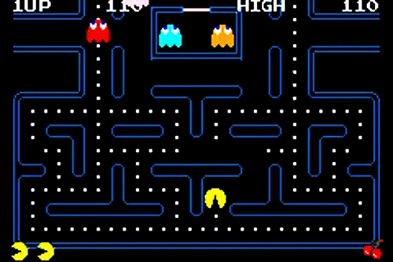

Se Pong fez as pessoas se acostumarem a jogar em público, Space Invaders
levou o vício a um novo patamar. Foi o produto que deu um sopro de ânimo
a um abatido nicho de mercado e que inspirou muitos pretendentes a
designers a seguir na profissão (Shigeru Miyamoto, da Nintendo, e Hideo
Kojima, da Konami, se declaram influenciados pelo jogo). Em 1978, a
presença de Space Invaders no Japão era maciça – em bares, restaurantes,
shopping centers. Em dois anos, a Taito distribuiu 360 mil máquinas no
mundo (um sexto delas apenas nos EUA), que renderam mais de US$ 2
bilhões em fichas (moedas, no caso) ao final de 1982.
O grande público já estava mais acostumado aos videogames na entrada da nova década, o que fez o sucesso de Pac-Man algo inevitável. Pela primeira vez o jogador pôde se relacionar realmente com um protagonista – mesmo que ele fosse uma bola amarela com crises de apetite e perseguida por fantasmas obcecados.
Antes do herói criado por Toru Iwatani (diz a lenda que ele se inspirou no formato de uma pizza cortada para criá-lo), games eram estrelados por personagens anônimos. Mais do que um fenômeno cultural e midiático que rendeu rios de dinheiro aos envolvidos, Pac-Man era a peça que faltava para estabelecer definitivamente os games no imaginário popular.